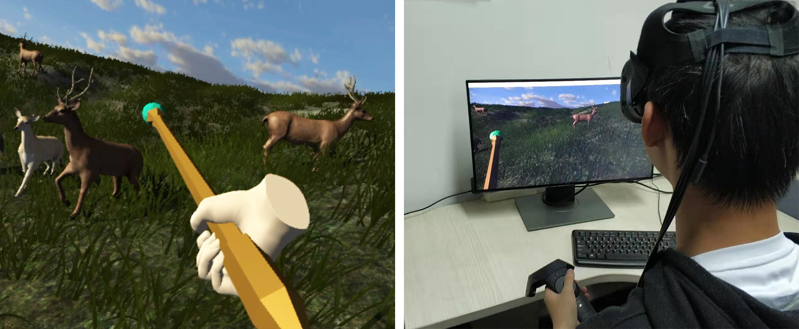

Temporal continuity of visual attention for future gaze prediction in immersive virtual reality
Zhiming Hu, Sheng Li, Meng Gai
Virtual Reality and Intelligent Hardware (VRIH), 2020, 2(2): 142-152.

Abstract
Background Eye tracking technology is receiving increased attention in the field of virtual reality. Specifically, future gaze prediction is crucial in pre-computation for many applications such as gaze-contingent rendering, advertisement placement, and content-based design. To explore future gaze prediction, it is necessary to analyze the temporal continuity of visual attention in immersive virtual reality. Methods In this paper, the concept of temporal continuity of visual attention is presented. Subsequently, an autocorrelation function method is proposed to evaluate the temporal continuity. Thereafter, the temporal continuity is analyzed in both free-viewing and task-oriented conditions. Results Specifically, in free-viewing conditions, the analysis of a free-viewing gaze dataset indicates that the temporal continuity performs well only within a short time interval. A task-oriented game scene condition was created and conducted to collect users’ gaze data. An analysis of the collected gaze data finds the temporal continuity has a similar performance with that of the free-viewing conditions. Temporal continuity can be applied to future gaze prediction and if it is good, users’ current gaze positions can be directly utilized to predict their gaze positions in the future. Conclusions The current gaze’s future prediction performances are further evaluated in both free-viewing and task-oriented conditions and discover that the current gaze can be efficiently applied to the task of short-term future gaze prediction. The task of long-term gaze prediction still remains to be explored.Links
BibTeX
@article{hu20temporal,
title = {Temporal continuity of visual attention for future gaze prediction in immersive virtual reality},
author = {Hu, Zhiming and Li, Sheng and Gai, Meng},
journal = {Virtual Reality and Intelligent Hardware},
volume = {2},
number = {2},
pages = {142--152},
year = {2020},
publisher = {Elsevier},
doi = {10.1016/j.vrih.2020.01.002}}